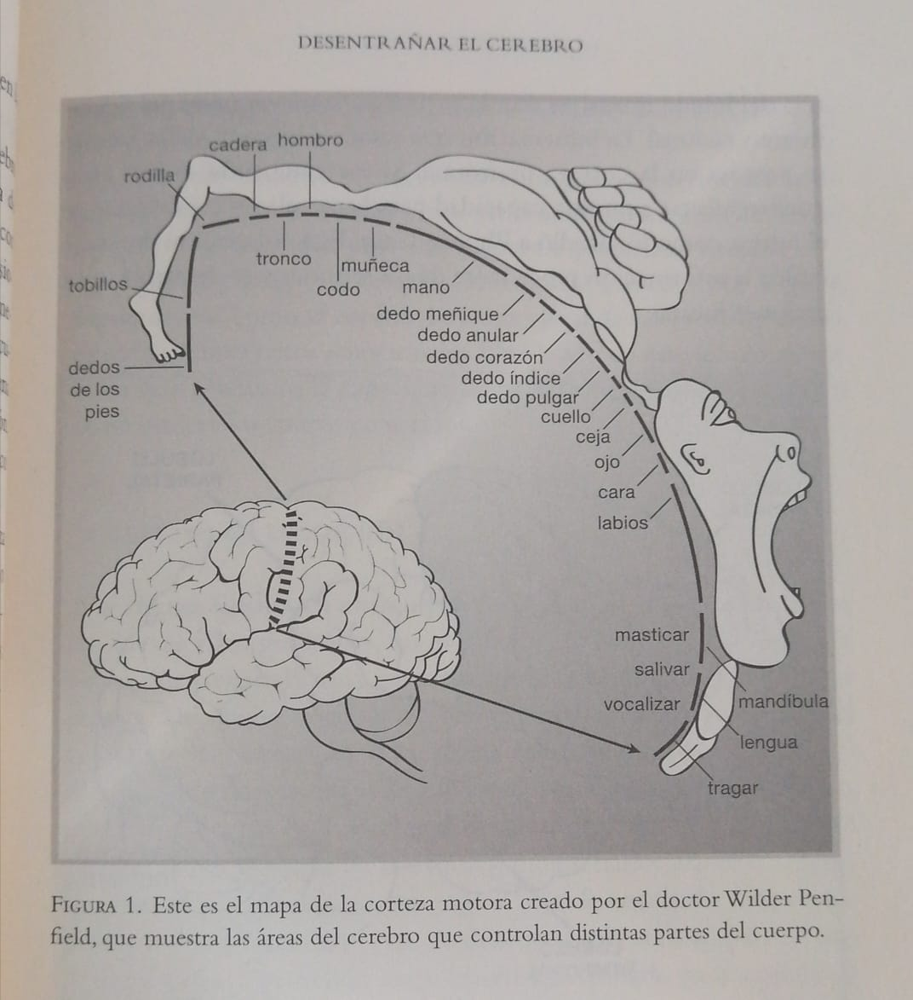

Review
Quiero comenzar este review agradeciendo enormemente a Ricardo Barrera por haberme regalado este libro y darme la oportunidad de aprender cosas increíbles,Profe Ricardo, un gran amigo y una persona que admiro mucho, que conocí precisamente en las vísperas de una feria de proyectos de aula mientras hacía la investigación y organizaba la logística de mi ponencia sobre computación cuántica, desde aquí le mando un gran saludo profe.
Comienzo mi aventura con este libro con la siguiente frase: “Mantén siempre la calma, calma para tomar tiempo, tiempo para crear conciencia, conciencia para cambiar, cambiar para ser mejor”
Una frase escrita precisamente por el profe Ricardo y la cual aprecio mucho y leo de vez en cuando para darme un poco paz y calma en momentos difíciles. Continuando con la lectura llegó a la parte de agradecimientos y me doy cuenta de la cantidad enorme y maravillosa de personas que de alguna manera le ayudaron a kaku en la comprensión y entendimiento del cerebro humano, casi una hoja de solo premios nobel, y si eso fuera poco le siguen casi 3 hojas de científicos de la NASA, neurocientíficos, ingenieros y expertos que sin duda le permitieron al escritor de esta obra tener la perspectiva completa sobre un tema, que como él menciona más adelante siempre fué su pasión para Kaku pero carece un poco de conocimiento al respecto. De tal forma que tenía ante mis ojos una recopilación del trabajo de los mejores científicos del mundo desde la perspectiva de uno de los mejores físicos que han existido.
Introduccion
La introducción del libro comienza por mostrar cuales han sido las preguntas más importantes que el ser humano ha hecho durante toda su existencia : El Cosmos y la mente humana. son campos que como humanidad siempre han causado fascinación. así mismo de la pregunta por la mente humana se desprende la pregunta : ¿Qué es la conciencia?. Mente y conciencia han sido preguntas que por miles de años hemos intentado responder, a partir de la psicología y más recientemente de la neurociencia, la introducción continua hablando de como Michio Kaku se hacía estas preguntas de niño, de como veía que nuestra mente humana con el mínimo defecto o accidente podía echarse a perder, provocando todo tipo de trastornos mentales y hasta la muerte, así mismo de como el desgaste cerebral produce que perder casi toda nuestra capacidad mental cuando llegamos a adultos mayores o abuelos, literalmente el cerebro a esa edad se atrofia, se hace cada vez más pequeño haciéndonos padecer de Alzheimer y de pérdida de raciocinio, Michio Kaku quedó aterrado al leer como los mejores científicos de todos los tiempos quedaban incapaces de avanzar en sus investigaciones a causa ( principalmente pero no en todos los casos ) de la pérdida de su capacidad cerebral, la introducción termina hablando de cómo Kaku dio rienda suelta a una de sus más grandes pasiones: El Universo, de tal manera que su sueño por ser un neurocientífico no sería una realidad.
reaching the middle
La primera mitad del libro la resumí en los siguientes puntos: Conceptualizar correctamente la idea de ¿Que es el cerebro y la conciencia?, una de las personas en responder a esta pregunta sería el increíble astrofísico Carl Sagan:“Mi premisa fundamental sobre el cerebro es que su funcionamiento -eso que a veces denominamos mente- es consecuencia de su anatomía y fisiología, y de nada mas”, asi como esta apreciación ha habido muchas durante mucho tiempo, pues a través de los siglos y las diferentes civilizaciones siempre se ha tenido un concepto muy diferente de lo que es el cerebro, esto debido a que como humanidad no tuvimos un entendimiento del cerebro ( al menos cercano a la realidad y la ciencia) sino hasta hace unos 170 años aproximadamente, Lo cual es un conocimiento muy tardío teniendo en cuenta que desde hace miles de años la humanidad ha acumulado un compendio de saberes en diversas ramas de la ciencia pero, aunque su entendimiento fue tardío no es para nada despreciable pues, como veremos más adelante el cerebro humano es algo que simplemente sobrepasa nuestro entendimiento.
Así pues, hemos logrado como humanidad empezar a desentrañar el cerebro humano cuando en el año 1848 cuando debido a una explosion en un ferrocarril el cerebro de Phineas Gage se vio atravesado por una barra de acero que fue disparada producto de la explosion. Phineas Gage siguió con vida pero sus compañeros y personas cercanas notaron un brusco cambio en su personalidad, Gage era una persona amable antes del accidente, luego de este se convirtió en un patán que no era consciente de su actitud con los demás, tras su muerte en 1860 Actores como John Harlow y principalmente Pierre Paul Broca estudiaron su cerebro, dándose cuenta que el cerebro de Phineas Gage tenía una perforación en el lóbulo temporal izquierdo, más adelante se comprobará que los pacientes con un tipo de lesión similar a esta se verían afectados con problemas conductuales y dificultades en el habla y el lenguaje, a las personas con este tipo de daño cerebral se les diagnostica con la “Afasia de Broca”.
Casos tan dolorosos como este y el de los pacientes con cerebro dividido sentaron la base de la neurociencia y de empezar a relacionar el cerebro con las distintas partes del cuerpo, los sentidos y los pensamientos , a raíz de esto nacieron los primeros mapas de la corteza motora, creado por el doctor Wilder Penfield, el cual muestra las áreas del cerebro que controlan distintas partes del cuerpo y posteriormente el mapa del cerebro, separándolo lóbulos y dándole a cada uno de ellos unas funciones en específico

Nota: En la imagen se puede ver una especie de homúnculo. Es la forma en que nuestro cerebro percibe la sensibilidad de las partes de nuestro cuerpo.
La evolucion del cerebro
Pasadas unas décadas, ya alrededor de 1967 científicos como el doctor Paul McLean aplicando la teoría de la evolución de Charles Darwin lograron obtener la evolución del cerebro. La estructura más antigua del cerebro es el denominado “Cerebro reptil”, que en pocas palabras nos permite tener las funciones básicas para poder vivir tales como la respiración, digestión, equilibrio, latidos del corazón y presión sanguínea. Pero el cerebro reptil también nos permite tener comportamientos más instintivos como : La lucha por sobrevivir, el apareamiento y la territorialidad. A todo esto lo llamaremos en nivel de conciencia I ( uno ). Luego la evolución daría el siguiente gran paso llegando a los mamíferos, estos desarrollaron el sistema límbico que en resumidas cuentas nos permite tener memoria, emociones, sentir placer, hambre, sed y por supuesto relacionarnos socialmente, a esto le llamaremos en nivel de conciencia II ( dos ). Por último tenemos la evolución que ha tenido el cerebro humano, que corresponde a la capa más externa del cerebro la cual controla los pensamientos cognitivos más elevados, básicamente esta nueva evolución del cerebro le permitió a la raza humana poder planear sus planes a futuro y básicamente tener cierto de nivel de autoconciencia sobre nosotros mismos para de esta manera trazar un destino como raza, a esto le se le denomina el nivel de conciencia III( tres ).
Luego de tener una idea clara sobre la evolución de cerebro y las partes que lo componen es hora de mirar más adentro y saber de qué está hecho y hace la función que hace en nosotros.Para esto tendríamos que desarrollar aparatos eléctricos y magnéticos que nos permiten realizar exámenes tales como la Imagen por Resonancia Magnética ( MRI ), con ondas de radio que penetran el tejido sin afectar podemos obtener una imagen interna del cerebro, los primeros hallazgos de esto fue permitirnos ver que el cerebro es una fábrica electromagnética que está todo el tiempo recibiendo, procesando y enviando señales y que las responsables de todo esto no son más que las neuronas, “la Neurona es una célula del sistema nervioso central que posee la capacidad de recibir y decodificar información en forma de señales eléctricas y químicas, transmitiendoles a otras células”(Significado de Neurona, 2019),se estima que pueden haber alrededor de 100.000 neuronas en nuestro cerebro y a su vez cada neurona se interconecta unas 50.000 neuronas, algo bárbaro y sin precedentes.
Acá quiero hacer una acotación, los primeros aparatos de resonancia magnética aparecieron hacia los años 90’ del siglo XX pero ya desde hacía 100 años se tenía el conocimiento de que el cerebro estaba compuesto de neuronas y la forma que estas tenían a partir de teñir un trozo de cerebro ( Fueron descubiertas por el doctor Camilo Golgi en 1873 ), pero lo importante es que hubo un redescubrimiento de las neuronas, pues tenemos la capacidad de saber exactamente qué hacen y cómo lo hacen, de saber cómo se comporta un cerebro activo, de saber que partes de este se activan con determinados pensamientos y sentimientos ¡Eureka! logramos abrir la ventana a nuestra mente y nuestra conciencia, el camino de ahí en adelante a pesar de ser super difícil y escarpado daría un gran fruto a la neurociencia, pues se avanzó más en 20 años que no en 2000!
La aparición de la imagen por resonancia magnética dio paso a miles de proyectos con financiación pública y privada con el fin de avanzar en el entendimiento de la mente y la conciencia, para entendernos como humanidad. El libro documenta muchos casos de estudio, muchos proyectos, muchos conceptos super valiosos pero renunciaré solo los más relevantes:
La neurociencia con fines clínicos
El estudio del cerebro a partir de conocer sus rutas y la interacción neuronal con el fin de poder hacer un mapeo completo, de saber exactamente las funciones de cada una de las partes del cerebro, este proyecto estuvo a cargo de la iniciativa BRAIN financiada por el gobierno de Estados Unidos en el periodo de Barack Obama con el fin de conocer el origen de las enfermedades degenerativas del cerebro principalmente, así mismo de tener conocimiento de la forma en que pensamos, aprendemos, memorizamos o nos relacionamos. Este proyecto por supuesto se vió inmerso en conflictos morales pues si una información así de valiosa cae en malas manos el peligro será inminente. Prácticamente todos los avances en neurociencia tienen este problema
Mejorar nuestra capacidad mental - Ser super humanos
Conocer nuestra mente y conciencia implica también superar algunas barreras mentales que nos impiden avanzar un poco más como sociedad, Kaku nos adentra en un futuro donde los humanos tengamos chips implantados en nuestro cerebro y de esta manera poder por ejemplo : Descargar Terabytes de información sobre determinada habilidad y conocimientos y en cuestión de segundos ser expertos en todo lo que queramos ( como en la película ‘The Matrix’ ), algo que en los próximos 50 años es perfectamente posible y bueno, sobre esta idea se me escapan varias cosas pero de verdad, si les interesa el tema podemos hablarlo más en profundidad y si es asi les recomiendo leer este libro.
Inmortalizarnos como humanidad
Otro proyecto que me llamó la atención fué el cual, de alguna manera quiere inmortalizar al ser humano y a su conciencia, nuestros cuerpos son frágiles, no pueden vivir más de un centenar de años y este limitante hace que muchos científicos quieran traspasar nuestra consciencia y nuestra mente a un computador, y que este sea prácticamente inmortal, de tal manera que podamos conectarnos a avatares robóticos en cualquier lugar del universo y en cualquier momento, lo sé, suena de locos, futurista y de alguna manera irrealista, pero este libro nos da las bases para pensar que puede ser posible y a pesar de que los neurocientíficos saben que no van a vivir para poder traspasar su conciencia a un computador ( lo cual puede causarles un poco de frustración y tristeza ) están haciendo su absoluto mejor esfuerzo para avanzar con los proyectos así tarden unos 100 años en poderse completar del todo, pero los resultados parciales que van teniendo cada uno de estos proyectos nos hace soñar con que puede ser posible.
Lo que quiero decir es que la neurociencia es la mejor aliada que tenemos si algun dia queremos ser una humanidad intergalactica presente en todo el universo y esto es algo que el visionario Elon Munsk sabe y por eso a través de su empresa NeuroLink está empezando a implantar los primeros chips en animales y en pocos meses en voluntarios humanos con el fin de conocer las señales que hay dentro del cerebro a mayor nivel de detalle con el fin de poder entrenar una inteligencia artificial que sea capaz de prácticamente todo lo que nosotros hacemos y pues a raíz de que con el tema de NeuraLin ha habido muchísimo Hype los invito a que se vean el video de Fredy Vega de Platzi.
Y bueno, francamente el libro termina de una forma muy bonita hablando sobre inteligencia artificial y sobre la posibilidad de que en el interior de las neuronas se están efectuando procesos cuánticos ¡algo que sería de super locos! y pues también el autor se deja llevar hablando un poco sobre determinismo y demás, que me recordó mucho a la serie Dark jejeje. Pues nada, este ha sido mi review, a continuación haré algunas notas adicionales y por supuesto un pequeño audio que espero que escuchen, Gracias.